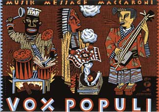

КАК НАУЧИТЬСЯ РИСОВАТЬ
Промежуточные итоги
Ухожу в декретный отпуск. Вернусь в сентябре с кучей новостей, до поры секретных. Кроме того, нужно кое-что переосмыслить.
Я, например, обнаружил, что добрая половина любимейших из важнейших для меня иллюстраторов просто плюют на то, что для меня важнее всего. А именно на движение, пластику, выразительность, на характер (им, впрочем, тоже что чуть-чуть Диснея не помешало бы).

[Нейт Уильямс](https://web.archive.org/web/20070828015446/http:// n8w.com)
Те же, кто вроде бы действует примерно так, как мне кажется правильным, большей частью в число любимых не входят, например, Томер Ханука (я, впрочем, думаю, что он просто человек неприятный).
Можно считать это парадоксом, но я предпочитаю ждать какой-то новой, невиданной еще иллюстрации, одновременно и такой, и эдакой. Видимо, главное в иллюстрации — это все же обаяние, и если характер и пластика кое-как, но поддаются как-то анализу, то тут и говорить, в общем, не о чем. (Это был бы самый правильный подход к ведению колонки — прикладывать к вывешиваемым иллюстрациям видеоролики с разводящим руками, плачущим, задыхающимся и/или мычащим Меламедом. Может быть, я так и сделаю, по переосмыслению).
Так вот, откуда взять обаяние, я, убейте, не знаю, но все остальное освоить не так уж сложно. Сейчас я расскажу, как это делается — слушайте сюда. Во-первых, бегите от гипсовых голов: от них весь вред. Чтобы рисовать движение, нужно рисовать нечто движущееся, причем много. Мысль вроде бы банальная, но, как почти любая банальная мысль, она глубоко верна и так же глубоко игнорируема. В том числе многими из моих коллег. Не надо думать, что это относится только к начинающим. Да, да, это я тебе, тебе.
Легкость в рисунке можно выработать только тогда, когда вам не позируют. Лучшие модели — это люди в телевизоре. По первости можно включать кино и ставить на паузу. В метро или на улице тоже хорошо, правда, могут побить. Поэтому лучше издалека — тогда, опять же, никакие мелкие детали не отвлекает от собственно движения. Рисовать быстро значит рисовать экономично. Это помогает выработать свободную линию, а линия это и есть та одежка, по которой нас, иллюстраторов, встречают. И, наконец, рисовать много — значит, рисовать легко. Не сразу — сперва будет трудно, но это нужно «переходить». Какое-то время нужно себя заставлять (говорят, чтобы зарисовать, нужно рисовать тысячу часов — это примерно по три часа в день в течение года. Или по часу в день три года. Главное, не остановиться после, но от этого должен защитить скрытый механизм, о котором чуть ниже). Это как зарядка, или диета, как, в общем, и все, что полезно здоровью. Потом привыкаешь. Потом становится легко. Потом оказывается, что без этого уже никак. И вот тогда, и только тогда — вот тогда количество начинает переходить в качество. Больше в качество переходить — нечему. И оно переходит, гарантировано.
Не скучайте без меня. Заведите себе альбомец и приучайтесь рисовать на коленке. Все время. Рисуйте во сне, как Катыхин. Бросьте курить, вернее, перекуривать. Аппетит приходит во время еды. Идеи не приходят к тому, кто их ждет. Рисуйте только то, что вас заинтересовало. Только так есть шанс заинтересовать кого-то еще. И если вы не видите вокруг ничего интересного, то вам нужна другая профессия. Учитесь смотреть по сторонам.
Поверьте на слово, рисование — это кайф, не сравнимый ни с чем — подозреваю, что примерно как летать. Очень может быть, что иллюстраторское обаяние — это способность сообщить его зрителю. Пускай к моему возвращению у вас на коленке будет костяная мозоль. Привет.